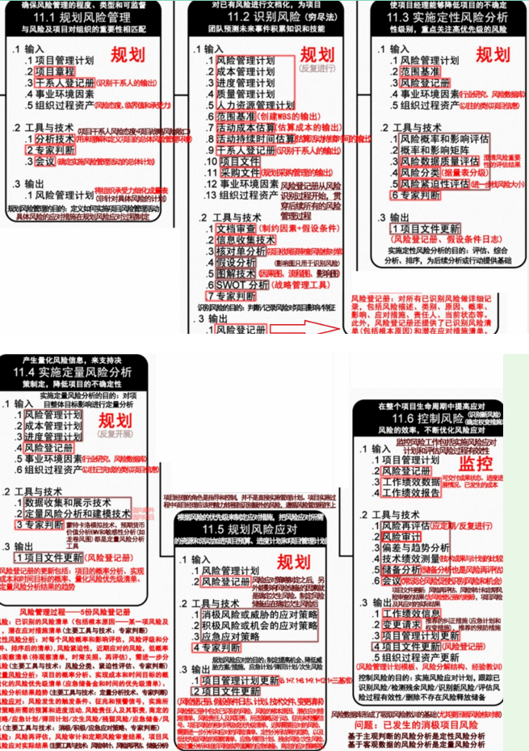
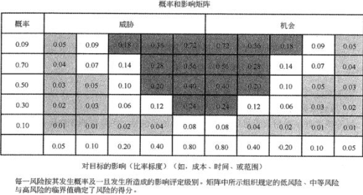
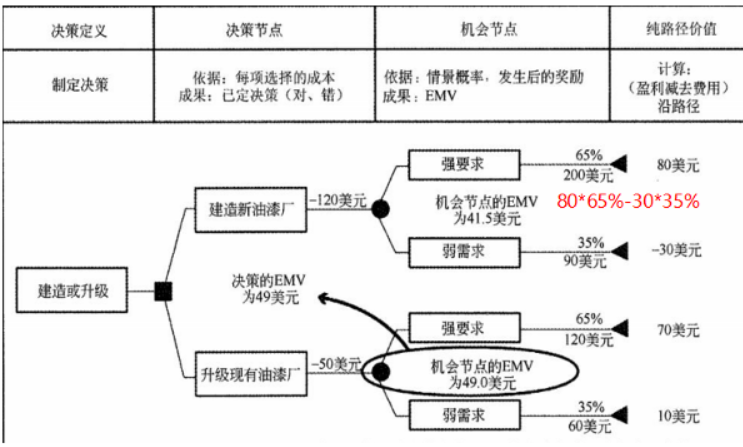
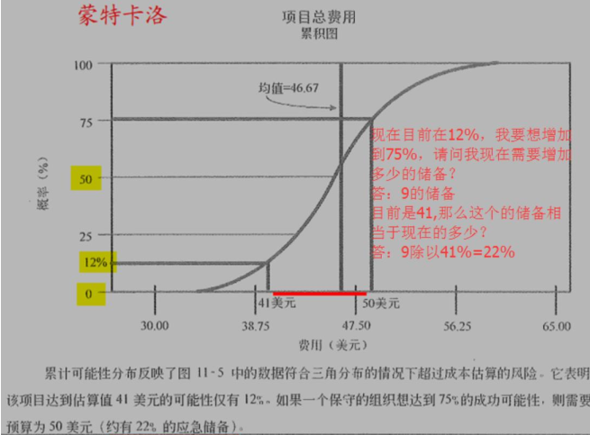
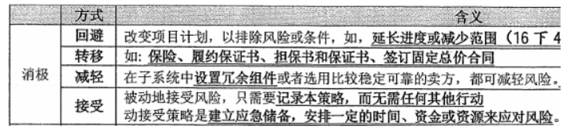
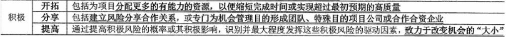

分值：3分
综合图谱

风险概述
基本特性
- 随机性：发生和后果具有偶然性
- 相对性：风险相对于项目活动的主体而言的
风险分类
- 按后果分
- 纯粹风险
- 投机风险
- 按来源分
- 自然风险
- 人为风险
- 按可预测性分
- 已知风险：发生和后果都可预测
- 可预测风险：可以预测发生，不能预测后果
- 不可预测风险：有可能发生，可能性不可预见
风险管理过程
- 风险管理规划一决定如何进行规划和实施項目风险管理活动。
- 风险识别一判断哪些风险会影响項目，并以书形式记录其特点。
- 定性风险分析一对风险概率和影响进行评估和汇总，进而对风险进行排序，以便随后进一步分析或行动
- 定量风险分析一一就识别的风险对項目总体目标的影响进行定量分析。
- 风险应对规划一针对項目目标制订提高机会、降低威胁的方案和行动。
- 风险监控一在整个項目生命周期中，跟踪已识别的风险、监测残余风险、识别新风险和实施风险应对计划，并对其有效性
风险管理计划内容
- 方法论
- 角色与职责
- 预算
- 时间安排
- 风险类别
- 风险概率和影响的定义
- 概率和影响矩阵
- 修改的项目干系人承受度
- 报告格式
- 跟踪
应该鼓励所有项目人员参与风险的识别，贯穿全过程；制定风险管理计划首先要考虑组织及项目人员的风险态度和风险承受度
风险识别的工具技术
- 文档审查
- 信息收集技术
- 头脑风暴：集思广益，不一定有结论，重在听取意见
- 德尔菲技术：专家匿名方式进行若干轮的意见表达，一定得出结论。防止个人对结果造成不适当的过大影响
- 访谈：主要方法之一
- 根本原因识别：对项目风险的根本原因进行调查，制定有效的风险应对假设
- 核对表分析
- 假设分析：根据一套假定、设想假设进行构思和制订，是检验假设有效性的一种技术
- 图解技术
- 因果图
- 系统或过程流程图
- 影响图
- SWOT分析技术
- 优势strength
- 劣势weakness
- 机会opportunity
- 威胁threat
- 专家判断
风险登记册
内容
- 已识别风险清单
- 潜在应对措施清单
- 风险根本原因
- 风险类别更新
- 更新的风险分类
更新哪些部分
- 项目风险的相对排序和优先级清单
- 按照类别分类的风险
- 需要在近期采取应对措施的风险清单
- 需要进一步分析和应对的风险清单
- 低优先级风险观察清单
- 定性分析结果的趋势
定性风险分析的工具技术
定性风险分析：对已识别的风险进行优先排序
- 风险概率与影响评估
- 概率和影响矩阵
- 高风险：深灰色
- 中风险：中灰色
- 低风险：浅灰色

- 风险数据质量评估
- 风险分类
- 风险紧迫性评估
- 专家判断
定量风险分析的工具技术
- 数据收集和表示技术
- 访谈
- 概率分布
- 定量风险分析和模型技术
- 敏感性分析
- 预期货币价值分析
- 决策树分析

- 模型和模拟（蒙特卡洛技术）

- 专家判断
规划风险应对的工具技术
- 消极风险或威胁的应对策略

- 积极风险或机会的应对策略

- 应急应对策略
- 专家判断
控制风险的工具技术
- 风险再评估：不断评估，应对可能出现的新的风险
- 风险审计：检查和记录风险应对措施的有效性，及风险管理过程的有效性
- 偏差和趋势分析
- 技术绩效测量
- 储备分析
- 会议